Shape of Thought: Progressive Object Assembly via Visual Chain-of-Thought
 Paper
Paper
Shape-of-Thought (SoT) reframes rendered object generation as progressive assembly. Instead of producing a final image in one opaque step, SoT generates an interleaved trace of textual assembly decisions and rendered intermediate states, giving the model a visual working memory for structural constraints such as part counts, attributes, connectivity, and topology.
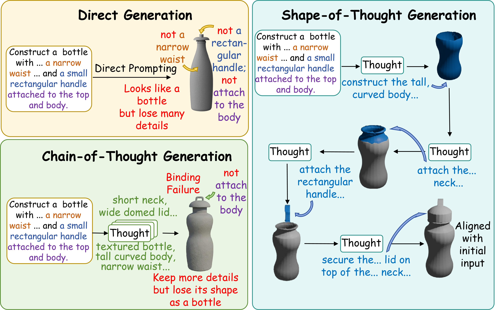
Overview
Modern text-to-image and rendered text-to-shape systems can achieve strong visual fidelity, but they remain brittle when a prompt requires precise compositional structure. Models may miss repeated components, bind local attributes incorrectly, or produce plausible silhouettes with broken part-level relations. SoT targets this structural bottleneck by making generation explicit and inspectable: each step predicts a rationale and grounds it in an updated rendered state.
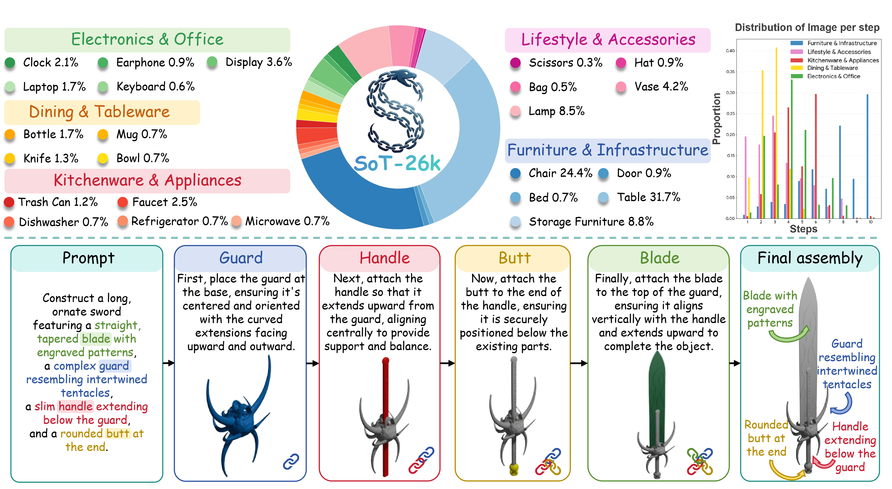
SoT-26K provides grounded assembly traces, while SoT performs inference as an alternating stream of textual rationales and rendered states.
Method
SoT trains a unified multimodal autoregressive model to operate over interleaved text and image-token blocks. At step n, the model first emits a structural decision, then produces the corresponding rendered intermediate state. The generated state is fed back as visual context for later decisions, allowing the model to maintain step-wise visual grounding.
The system is deliberately rendered-domain first: it does not produce explicit 3D geometry at inference time and does not rely on external engines during decoding. The 3D CAD hierarchy is used offline to construct supervision, while generation itself is an image-space process with transparent intermediate states.
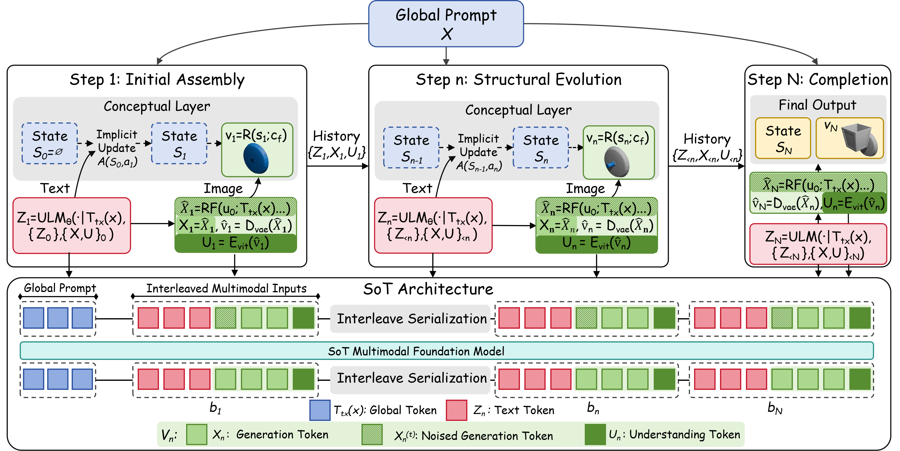
The SoT framework progresses from initial assembly to structural evolution and completion through interleaved rationale and visual-state generation.
SoT-26K Dataset
SoT-26K converts part-based CAD assets into step-aligned multimodal traces. The pipeline loads PartNet hierarchies, validates part structure, decomposes an object into an assembly schedule, renders canonical front-view states with auxiliary views, and annotates each step with grounded textual rationale.
Grounded traces
Each sample pairs a goal prompt with a sequence of rationale-and-render updates, ending in a final assembly.
Controlled structure
The dataset isolates compositional properties such as repeated parts, attachment, attributes, and topology.
Efficient release format
The public dataset is packaged for multimodal loading with image and text fields in Parquet format.
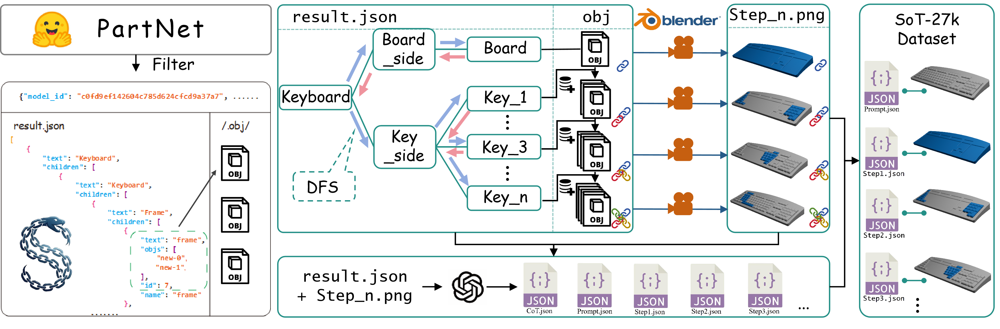
SoT-26K construction: CAD hierarchy processing, assembly scheduling, rendering, annotation, validation, and packaging.
Progressive Shape Assembly Traces
SoT decomposes each goal prompt into sequential construction steps across diverse object categories. At each step, the model produces a structural rationale followed by a grounded visual state, making the generation process explicit and visually traceable.
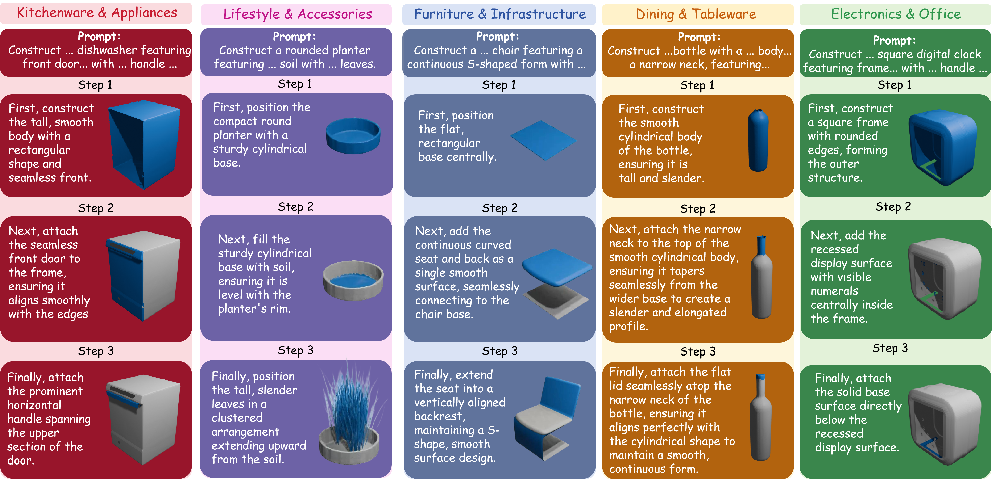
Interleaved rationales and rendered states make the construction trajectory inspectable.
T2S-CompBench
T2S-CompBench evaluates both final structural compliance and trace faithfulness. Structure metrics audit component numeracy, shape fidelity, attribute binding, connectivity, and visual topology, while process metrics assess rationale alignment and trace stability across generated intermediate states.
| Metric family | What it checks | Why it matters |
|---|---|---|
| Structure | CN, SF, AF, CP, VT | Whether the final rendering respects counts, attributes, connectivity, and topology. |
| Process | RA, TS | Whether the generated trace remains faithful and visually stable across steps. |
| Multi-view extension | Front, left, right, back views | Whether projected structural evidence survives viewpoint changes. |
Results
Table below reports the main T2S-CompBench results from the paper. SoT improves structural compliance over direct generation, text-only CoT, and rendered 3D references, with the strongest gains on component numeracy, attribute fidelity, connectivity, and visual topology. RA/TS are only available for methods that generate explicit visual traces.
| Method | CN | SF | AF | CP | VT | RA | TS | Human | Latency / s |
|---|---|---|---|---|---|---|---|---|---|
| Bagel-7B | 64.26 | 71.57 | 58.34 | 62.14 | 65.42 | -- | -- | 3.12 | 51.95 |
| Bagel-7B-CoT | 75.88 | 74.23 | 72.16 | 68.92 | 71.38 | 45.49 | 32.71 | 3.65 | 103.46 |
| Shap-E | 42.15 | 75.38 | 25.23 | 21.11 | 28.59 | -- | -- | 1.85 | 9.92 |
| LGM | 68.62 | 80.15 | 55.40 | 72.30 | 76.50 | -- | -- | 3.25 | 6.48 |
| L3GO | 76.20 | 65.80 | 68.45 | 60.10 | 72.90 | -- | -- | 3.05 | 921.27 |
| Meshy 6 | 82.74 | 95.43 | 75.27 | 85.60 | 78.25 | -- | -- | 3.91 | 74.81 |
| Bagel-7B-SoT | 88.44 | 83.62 | 81.51 | 86.25 | 84.76 | 79.19 | 91.30 | 4.08 | 43.14 / step 257.75 total |
CN: Component Numeracy, SF: Shape Fidelity, AF: Attribute Fidelity, CP: Connectivity Plausibility, VT: Visual Topology, RA: Rationale Alignment, TS: Trace Stability. Human score is averaged on a 1--5 scale.
Qualitative Analysis
The paper further compares SoT with representative 2D and rendered-3D baselines across diverse object categories, covering structural failures beyond numeracy.
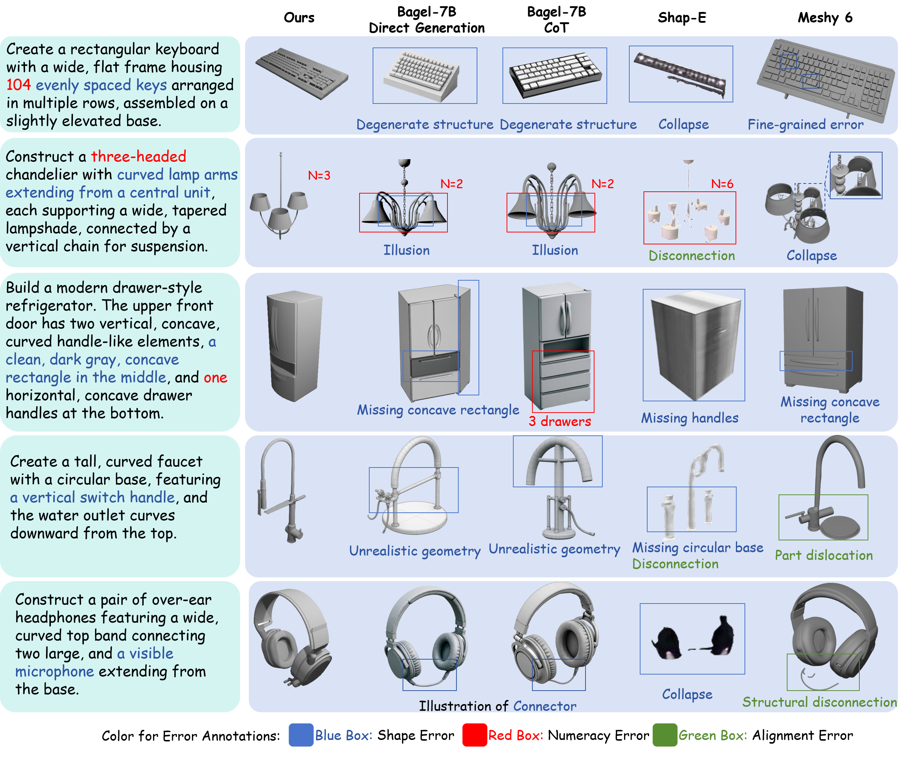
SoT better preserves component counts, object-level topology, local details, and part connectivity. Blue, red, and green boxes mark shape/detail failures, count mismatches, and connectivity/dislocation errors, respectively.
Examples
Additional examples include rendered-to-3D lifting, category-level traces, multi-view traces, and representative limitations.
Rendered-to-3D Lifting
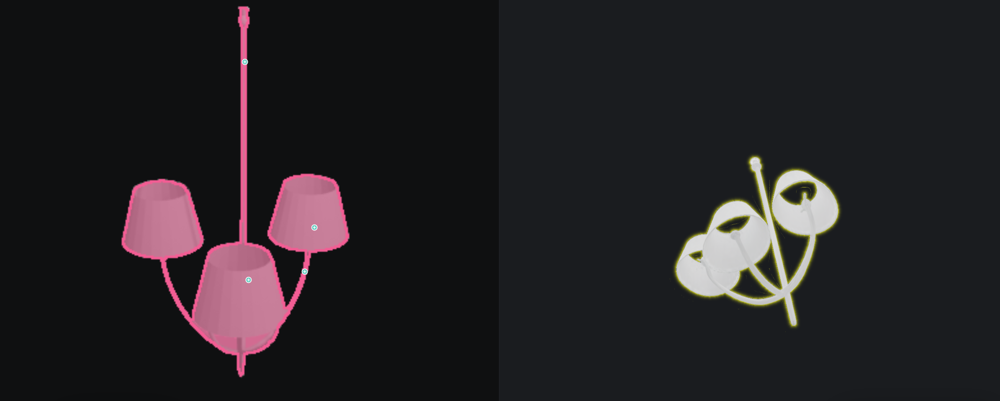
Rendered-to-3D case
Clear rendered structures can be consumed by external lifting tools, while native 3D generation remains future work.
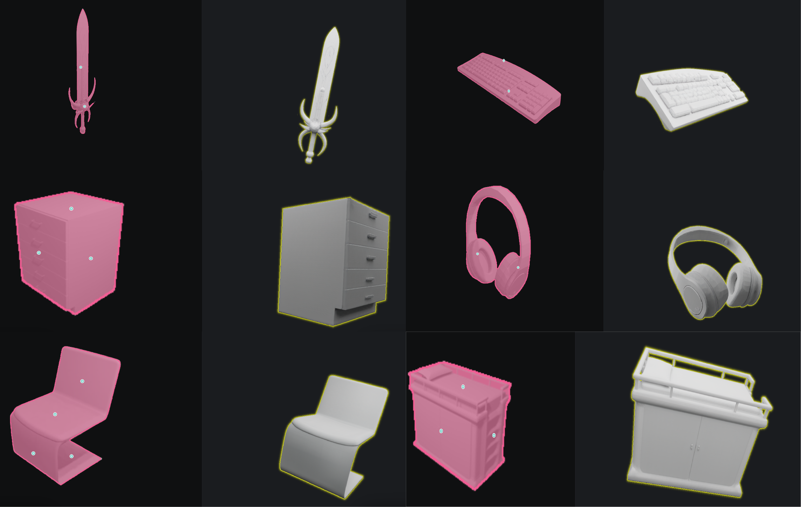
Diverse 3D lifting results
Additional external lifting outputs show which rendered object structures transfer most cleanly.
Additional Qualitative Results by Category
Multi-view Qualitative Traces
Failure Cases
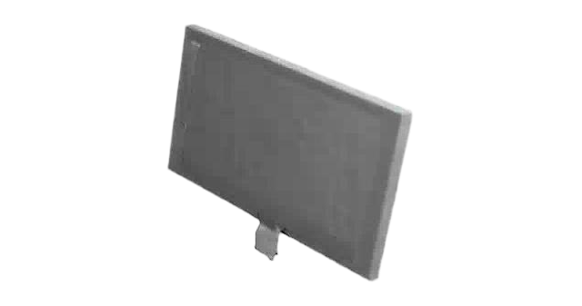
Failure: missing support
Fine structural supports can disappear when they are visually small or weakly grounded.
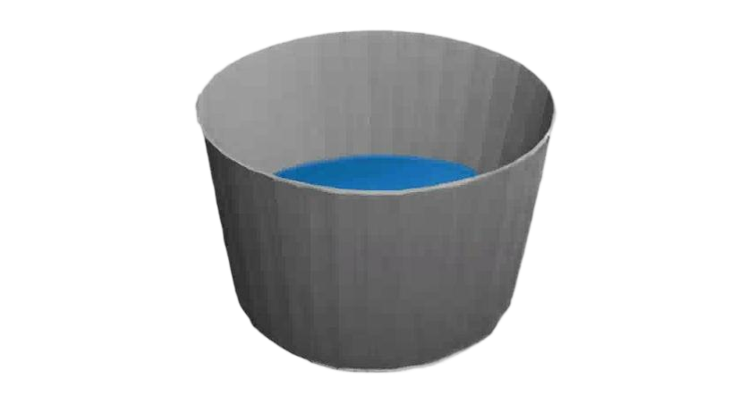
Failure: occlusion and shape
Occlusion can produce incorrect geometry even when the high-level object category is correct.
Multi-view Failure
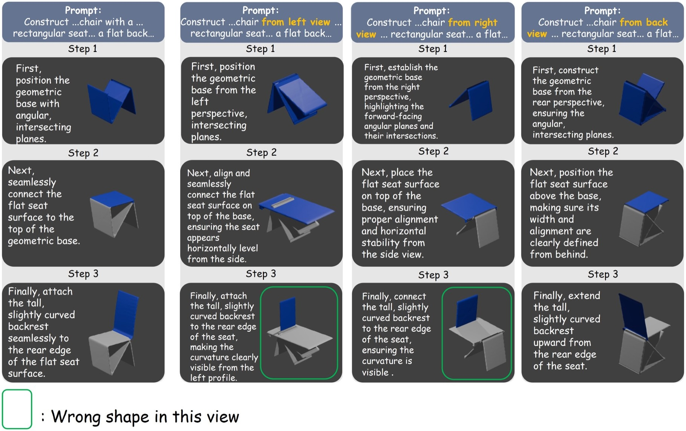
Multi-view limitation
Some generated views look plausible from the canonical front view but reveal view-specific structural errors.
BibTeX
@inproceedings{huo2026shapeofthought,
title = {Shape of Thought: Progressive Object Assembly via Visual Chain-of-Thought},
author = {Huo, Yu and Zhang, Siyu and Zeng, Kun and Liu, Haoyue and Lee, Owen and Chen, Junlin and Lu, Yuquan and Guo, Yifu and Liang, Yaodong and Tang, Xiaoying},
booktitle = {Forty-third International Conference on Machine Learning},
year = {2026},
url = {https://arxiv.org/abs/2601.21081}
}